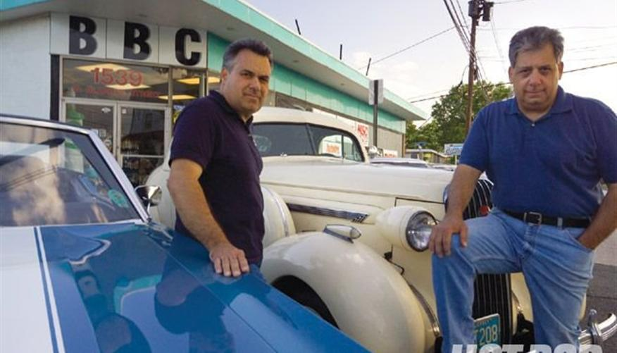

About Us
BBC Speed & Machine has been restoring, maintaining and servicing muscle cars, street rods & special interest vehicles for over 30 years.

Joe & Mike Bontempo started in their parent's garage in Rahway, NJ. They have expanded many times over the years with their journey ending in Linden in 1990 to a 6000 square foot building. Their facility incorporates a complete automotive & general machine shop, as well as, fabricating & welding areas. All work is done in house by skilled workers with years of experience.
A large inventory of N.O.S. GM, Ford, and Mopar components including blocks, differentials, transmissions, heads, brackets & pulleys complement our services.
If you are looking for any N.O.S. parts, or if your car needs restoration, wiring or a simple service; give us a call. We can help you complete your project.
 Frank Mistretta
from
Frank Mistretta
from